प्रमुख पाहुणे इंद्रजीत देशमुख यांनी वाचन, चिंतन, संस्कार आणि चांगली संगत यांचे महत्त्व अधोरेखित केले. मुलांसाठी कथावाचन व आनंदाचा तास आयोजित करण्याचे आवाहन केले.
📷 आमची वाटचाल
१४ नोव्हेंबर २००२ रोजी एका छोट्या खोलीत सुरू झालेल्या वाचनालयाने २४ वर्षांचा टप्पा पूर्ण केला. नूतन वास्तूमध्ये ग्रंथसंग्रह, अभ्यासिका, स्वतंत्र बालविभाग आणि ऑनलाइन शिक्षणाची सुविधा उपलब्ध करून देण्यात आली आहे.
२००२स्थापना
८,८००पुस्तके
२४ वर्षेवाटचाल
२४ वा वर्धापनदिन व नूतन इमारत स्थलांतर समारंभ
भावी पिढी घडविण्यासाठी गावोगावी वाचनालये उभी राहावीत – इंद्रजीत देशमुख
मान्यवरांचे मार्गदर्शन
संजय पवार (IAS) यांनी शिरगावच्या शैक्षणिक परिवर्तनाचा आणि वाचनालयाच्या वाटचालीचा आढावा घेतला.
अध्यक्ष दिलीप लालासाहेब पाटील यांनी शिक्षण आणि वाचनाच्या सामाजिक भूमिकेवर भर दिला.
पवार कुटुंबीय, ग्रामस्थ, देणगीदार आणि सहयोगी संस्थांच्या योगदानातून या उपक्रमाला बळ मिळाले. समारंभात नूतन वास्तूचे उद्घाटन झाले.
🎉 कार्यक्रमांची छायाचित्रे
मोठ्या आकारात पाहण्यासाठी छायाचित्रावर क्लिक करा.

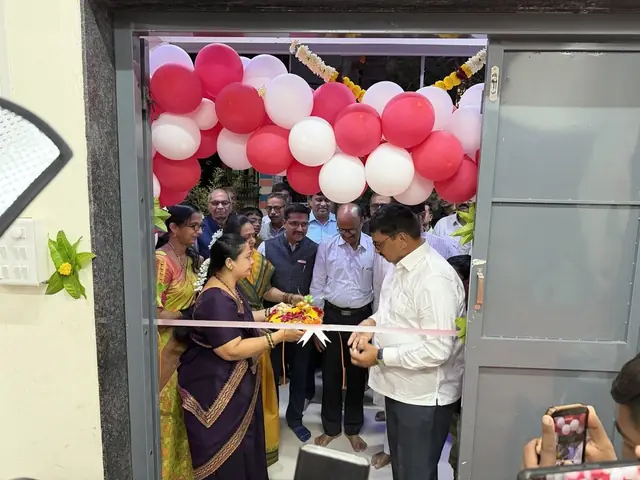

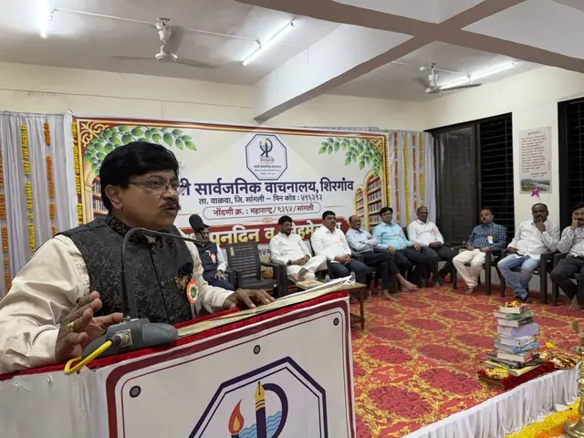

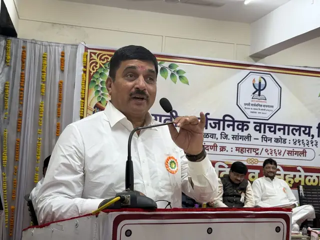


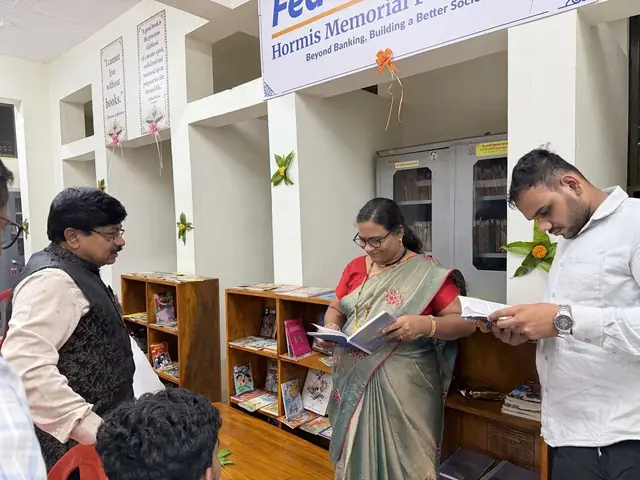

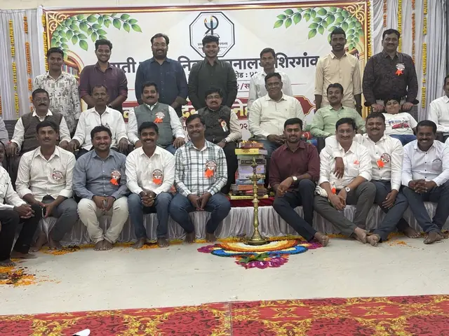

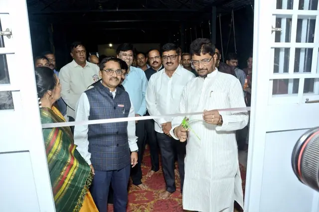

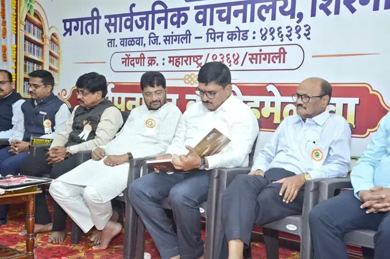

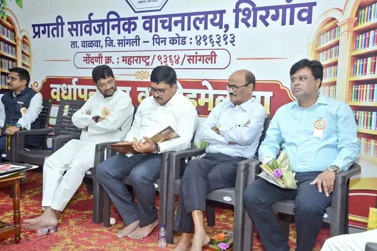

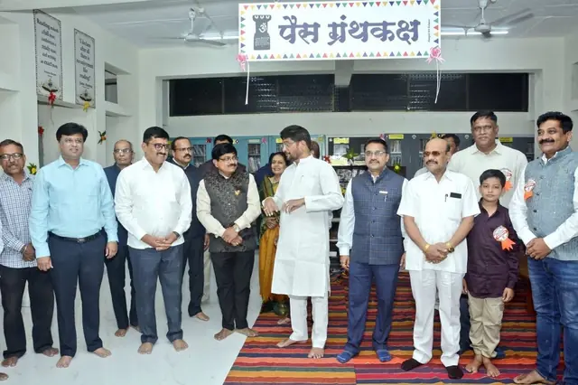

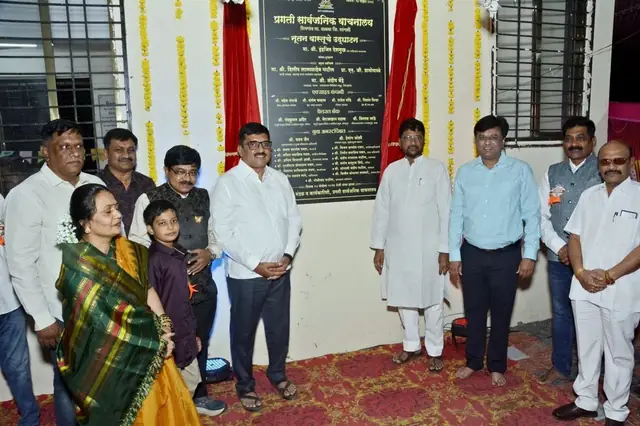

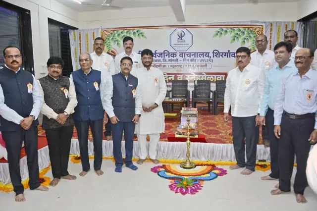

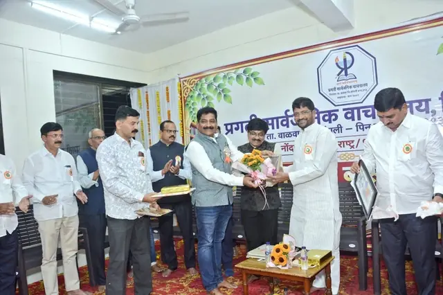

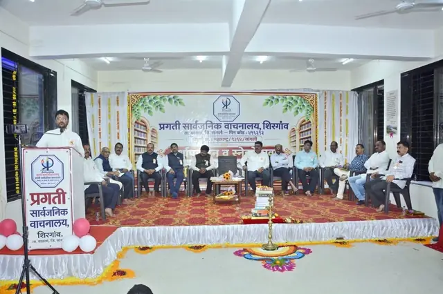
ग्रामस्थ व वाचकांचा उत्स्फूर्त सहभाग
वर्धापनदिन व नूतन इमारत स्थलांतर समारंभास विद्यार्थी, महिला, पालक, ज्येष्ठ नागरिक आणि ग्रामस्थ मोठ्या संख्येने उपस्थित होते. वाचनालयाच्या वाटचालीतील हा लोकसहभाग विशेष महत्त्वाचा आहे.

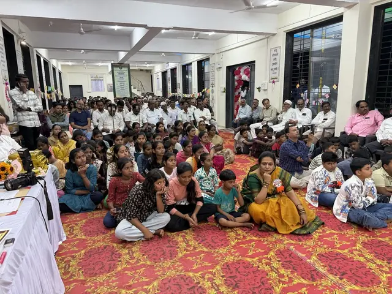

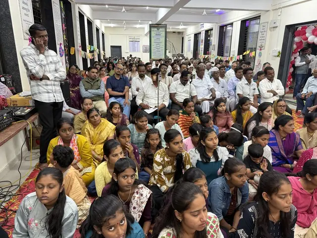

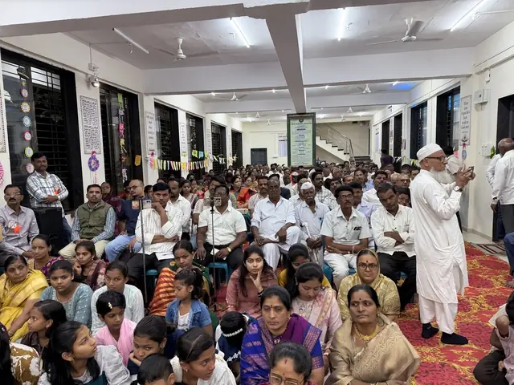
🙏 कृतज्ञता व स्नेहबंध
भूखंडदान
श्री. विष्णू गजाननराव ग्रामोपाध्ये, श्री. नारायण गजाननराव ग्रामोपाध्ये आणि श्री. श्रीधर गजाननराव ग्रामोपाध्ये या तीन बंधूंनी मिळून तीन गुंठे जागा दान केली. श्री. ज्ञानदेव बंडू पवार यांनी चार गुंठे जागा दान केली.
संस्थात्मक सहकार्य
एक्साईड कंपनी, फेडरल बँक, युवा अनस्टॉपेबल आणि श्री. संदीप बेंद्रे यांचे योगदान कृतज्ञतापूर्वक नमूद करीत आहोत.
वैयक्तिक सहकार्य
श्री. सयाजी पाटील, श्री. श्रीनिवास देशिंगकर, श्री. इम्तियाज अंदेवाडी तसेच सर्व ज्ञात-अज्ञात देणगीदार व हितचिंतकांचे मनःपूर्वक आभार.
समारंभाचे दस्तऐवज व वास्तू आराखडा
मूळ दस्तऐवज मोठ्या आकारात पाहण्यासाठी छायाचित्रावर क्लिक करा.

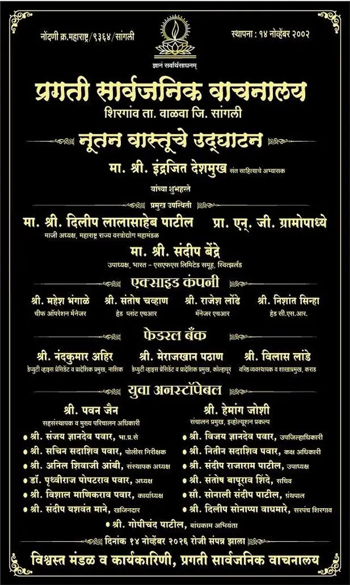

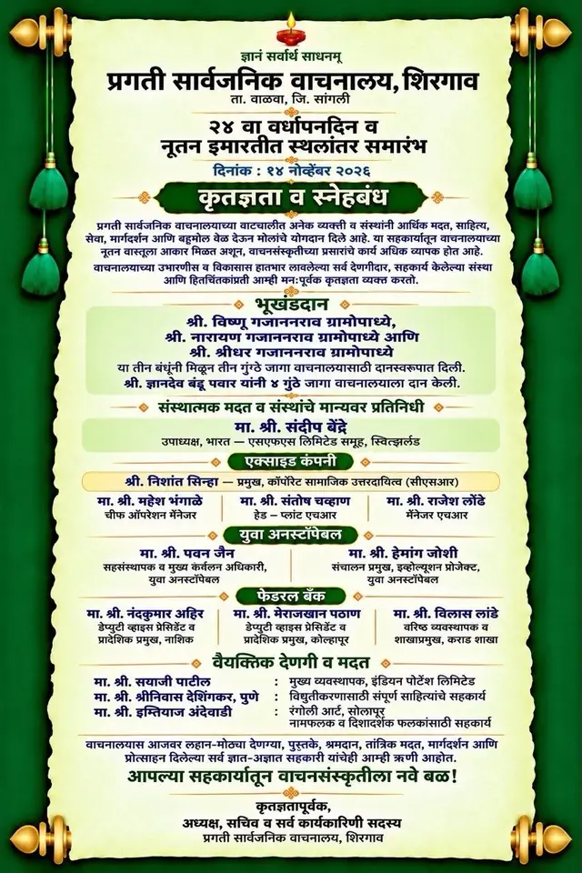

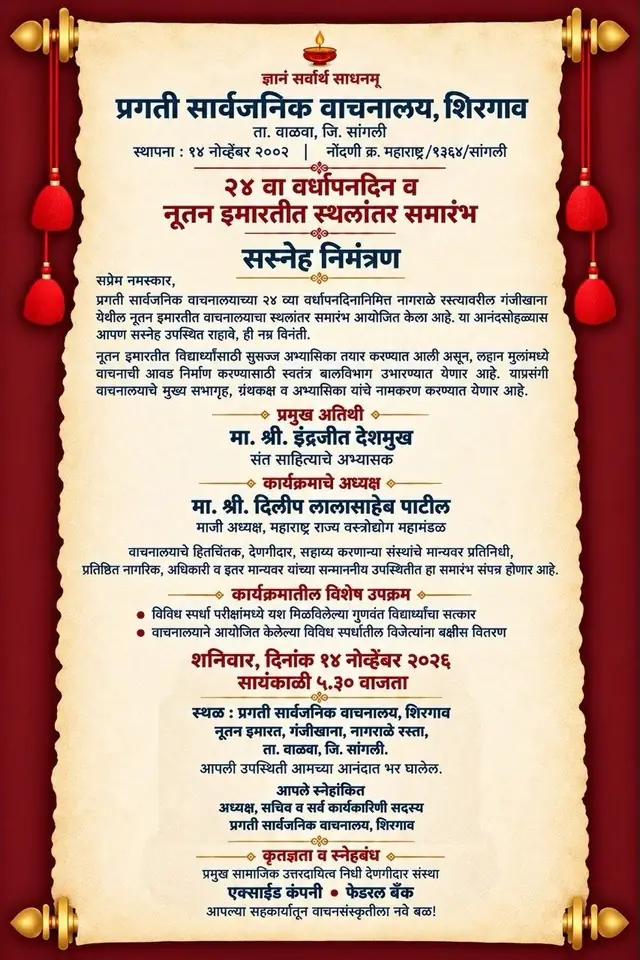

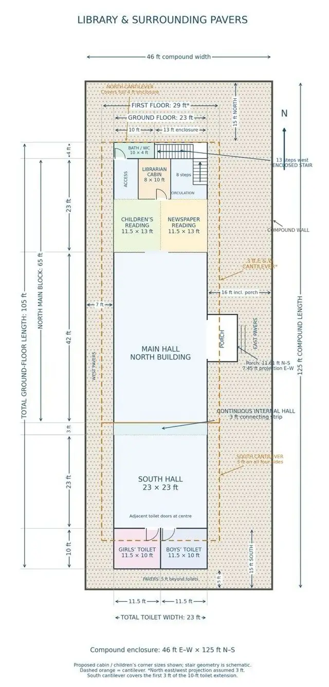

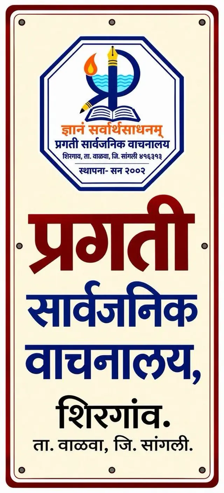